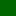

<!doctype html>
<html lang="en">
    <head>
        <meta charset="utf-8">
        <meta http-equiv="X-UA-Compatible" content="IE=edge">
        <meta name="viewport" content="initial-scale=1,user-scalable=no,maximum-scale=1,width=device-width">
        <meta name="mobile-web-app-capable" content="yes">
        <meta name="apple-mobile-web-app-capable" content="yes">
		<!-- leaflet created style sheet -->
        <link rel="stylesheet" href="css/leaflet.css" />
		<!-- style sheet generated from QGIS -->
        <link rel="stylesheet" type="text/css" href="css/qgis2web.css">
		<!-- style sheet for popup labels displaying text for project name -->
        <link rel="stylesheet" href="css/label.css" />
		<!-- style sheet for the point cluster symbology -->
        <link rel="stylesheet" href="css/MarkerCluster.css" />
        <link rel="stylesheet" href="css/MarkerCluster.Default.css" />
		<!-- style sheet for the geocoder toolbar -->
        <link rel="stylesheet" href="http://k4r573n.github.io/leaflet-control-osm-geocoder/Control.OSMGeocoder.css" />
		<!-- leaflet javascript api -->
        <script src="js/leaflet.js"></script>
		<!-- javascript for visualizing OSM data in this application -->
        <script src="js/OSMBuildings-Leaflet.js"></script>
		<!-- javascript for adding labels to leaflet maps -->
        <script src="js/label.js"></script>
		<script src="js/FunctionButton.js"></script>
        <script src="js/Autolinker.min.js"></script>
		<!-- javascript for geocoder toolbar -->
        <script src="http://k4r573n.github.io/leaflet-control-osm-geocoder/Control.OSMGeocoder.js"></script>
		<!-- javascript for the marker clusters -->
        <script src="js/leaflet.markercluster.js"></script>
		<!-- javascript for left sidebar font, provided by google -->
		<link href='https://fonts.googleapis.com/css?family=Yanone+Kaffeesatz:300' rel='stylesheet' type='text/css'>
		<!-- javascript and stylesheet for leaflet control plugin -->
		<script src="src/L.Control.Window.js"></script>
		<link rel="stylesheet" href="src/L.Control.Window.css" />
		
        <style>	
		.info {
			position: fixed;
			top: 0;
			left: 0;
			padding: 6px 8px;
			font: 14px/16px Arial, Helvetica, sans-serif;
			background: white;
			background: rgba(0,0,0,1);
			box-shadow: 0 0 50px rgba(0,0,0,0.2);
			border-radius: 0px;
}
		.info h1 {
			margin: 0 0 5px;
			color: #777;
}
			
		#map{
			position: fixed;
			top: 0;
			left: 0;
			bottom: 0;
			right: 0;
		}
		
        html, body {
            width: 100%;
            height: 100%;
            padding: 0;
            margin: 0;
        }
		
		
	  
		#paraOne{
			color: white;
			font-size: 150%;
		}
		
		#paraTwo{
			color: #52ea8c;
			font-size: 150%;
		}
	  
		.leaflet-bottom.leaflet-left{
			width: 100%;
		}
		
		.leaflet-control-container .leaflet-timeline-controls{
			box-sizing: border-box;
			width: 100%;
			margin: 0;
			margin-bottom: 15px;
		}
        </style>
		<!-- webpage title -->
        <title>WSSI Projects</title>
    </head>
	
    <body>
		
        <!-- create the map container for the application  -->
		<div id="map"></div>
		<!-- add the javascript for the json containing the wssi project center points -->
        <script src="data/json_ProjectSites0.js"></script>
		<script src="data/json_sitesSmooth5000.js"></script>
		
        <script>
		<!-- create popup when wssi sites centerpoint object is clicked -->
        var highlightLayer;
        function highlightFeature(e) {
            highlightLayer = e.target;
            highlightLayer.openPopup();
        }
        var map = L.map('map', {
            zoomControl:false, maxZoom:16, minZoom:7
        }).setView([38.288586,-77.997267],7);
		
		L.control.zoom({
			position:'bottomright'}).addTo(map);
        
        var feature_group = new L.featureGroup([]);
        
        var raster_group = new L.LayerGroup([]);
        var basemap = L.tileLayer('http://{s}.www.toolserver.org/tiles/bw-mapnik/{z}/{x}/{y}.png', {
            attribution: '&copy; <a href="http://openstreetmap.org">OpenStreetMap</a> contributors, <a href="http://creativecommons.org/licenses/by-sa/2.0/">CC-BY-SA</a>',
            maxZoom: 16
        });
        basemap.addTo(map);
        var initialOrder = new Array();
        var layerOrder = new Array();
        function stackLayers() {
            for (index = 0; index < initialOrder.length; index++) {
                map.removeLayer(initialOrder[index]);
                map.addLayer(initialOrder[index]);
            }
           
        }
        function restackLayers() {
            for (index = 0; index < layerOrder.length; index++) {
                layerOrder[index].bringToFront();
            }
        }
        layerControl = L.control.layers({},{},{collapsed:false});
          function pop_ProjectSites0(feature, layer) {
            var popupContent = '<table><tr><th scope="row">Project Name</th><td>' + (feature.properties['PROJECT_NA'] !== null ? Autolinker.link(String(feature.properties['PROJECT_NA'])) : '') + '</td></tr></table>';
			layer.bindPopup(popupContent);
        }

        function doStyleProjectSites0() {
            return {
                radius: 5.0,
                fillColor: '#a724cf',
                color: '#000000',
                weight: 1.0,
                opacity: 1.0,
                dashArray: '',
                lineCap: 'butt',
                lineJoin: 'miter',
                fillOpacity: 1.0
            }
        }
		
		var icon = L.icon({
			iconUrl: 'WSSI-Legend - Copy.png'
		
		})
		
        function doPointToLayerProjectSites0(feature, latlng) {
            return L.marker(latlng, {icon})
        }
        var json_ProjectSites0JSON = new L.geoJson(json_ProjectSites0, {
            onEachFeature: pop_ProjectSites0, 
            pointToLayer: doPointToLayerProjectSites0
            });
			
		
		// create a wssi sites polygon object from json file and add as geoJSON file to leaflet
		// disclaimer: wssi sites data was simplified using a 500' search radius to remove vertices
		var json_sitesSmooth5000 = new L.geoJson(json_sitesSmooth5000)
		
		
		var sitesPolyStyle = {
			"weight": 0,
			"color": "#52ea8c",
			"fillOpacity": 0.7,
			"fillColor": '#52ea8c'
		};
		
		json_sitesSmooth5000.setStyle(sitesPolyStyle)
		
		
		// add json object to map
		json_sitesSmooth5000.addTo(map)
		
		var overlayMaps = {
			"Cities": json_sitesSmooth5000
		};

        var cluster_groupProjectSites0JSON = new L.MarkerClusterGroup({showCoverageOnHover: false});
        cluster_groupProjectSites0JSON.addLayer(json_ProjectSites0JSON);

        layerOrder[layerOrder.length] = cluster_groupProjectSites0JSON;

        initialOrder[initialOrder.length] = cluster_groupProjectSites0JSON;
        cluster_groupProjectSites0JSON.addTo(map);
        raster_group.addTo(map);
        feature_group.addTo(map);
		
		var southWest = L.latLng(39.681988, -75.935048),
			northEast = L.latLng(35.247897, -86.158289),
			boundsGeo = L.latLngBounds(southWest, northEast);
		
        var osmGeocoder = new L.Control.OSMGeocoder({
            collapsed: false,
            position: 'topright',
            text:'Find Address',
			bounds: boundsGeo,
        });
        osmGeocoder.addTo(map);
        var baseMaps = {'Black & White Basemap': basemap};
		L.control.layers(baseMaps,{' WSSI Project Sites': cluster_groupProjectSites0JSON,' Project Coverage': json_sitesSmooth5000,},{collapsed:false}).addTo(map);
		//L.control.layers(json_sitesSmooth5000).addTo(map);
        L.control.scale({options: {position: 'bottomleft', maxWidth: 100, metric: true, imperial: false, updateWhenIdle: false}}).addTo(map);
        stackLayers();
        map.on('overlayadd', restackLayers);
		
		//create marker for the wssi gainesville office
		var gainesvilleOffice = L.marker([38.795643, -77.600902])
		map.on('zoomend ', function(e) {
			if (map.getZoom() < 16){map.removeLayer(gainesvilleOffice)}
				else if(map.getZoom() >= 16) {map.addLayer(gainesvilleOffice)}
		});
		
		//create marker for the wssi maryland office
		var marylandOffice = L.marker([39.093959, -76.634885])
		map.on('zoomend ', function(e) {
			if (map.getZoom() < 16){map.removeLayer(marylandOffice)}
				else if(map.getZoom() >= 16) {map.addLayer(marylandOffice)}
		});
		
		//create marker for the wssi roanoke office
		var roanokeOffice = L.marker([37.264396, -79.977120])
		map.on('zoomend ', function(e) {
			if (map.getZoom() < 16){map.removeLayer(roanokeOffice)}
				else if(map.getZoom() >= 16) {map.addLayer(roanokeOffice)}
		});
		
		//Add button to zoom to Gainesville Office
		var btn = L.functionButtons([{ content: '<b><font color="green">Northern Virginia Office</font></b>' }]);
			btn.on('clicked', function(data) {
			if( data.idx == 0 ) {
				map.setView([38.795544,-77.600838], 16);
					}
			});
			map.addControl(btn);
			
		//Add button to zoom to Roanoke Office
		var btn = L.functionButtons([{ content: '<b><font color="green">Southwestern Virginia Office</font></b>' }]);
			btn.on('clicked', function(data) {
			if( data.idx == 0 ) {
				map.setView([37.264389, -79.977162], 16);
					} 
			});
			map.addControl(btn);	
			
		//Add button to zoom to Maryland Office
		var btn = L.functionButtons([{ content: '<b><font color="green">Maryland Office</font></b>' }]);
			btn.on('clicked', function(data) {
			if( data.idx == 0 ) {
				map.setView([39.093901,-76.634860], 16);
					} 
			});
			map.addControl(btn);	

		
		
		// Creating window object
		var win =  L.control.window(map,{title:'Welcome to the WSSI Web Map',modal:true,content:''})
           .show()
		
		
		
		

        </script>	
    </body>
</html>
